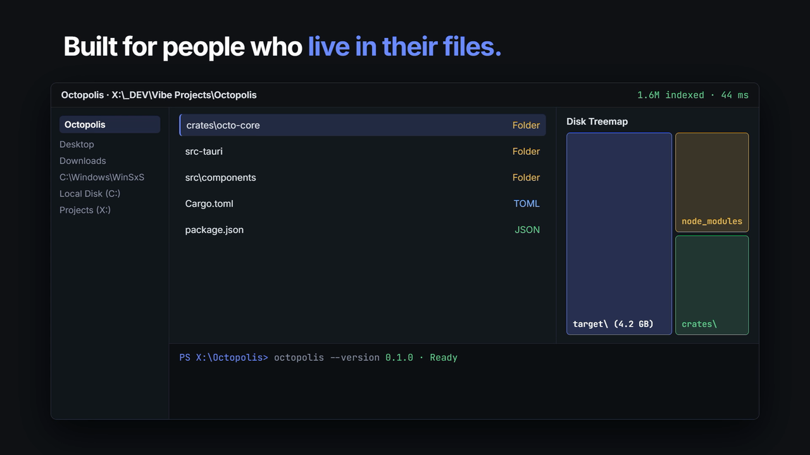
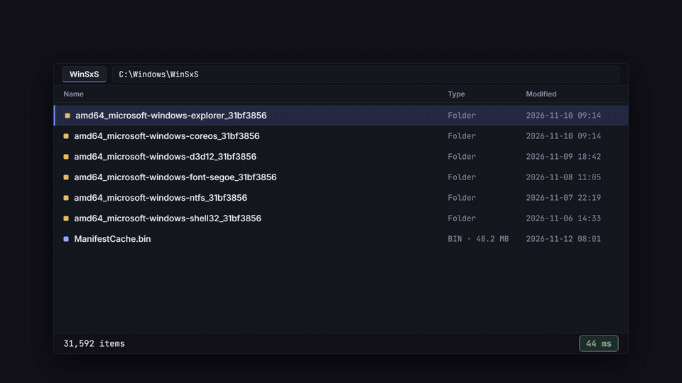
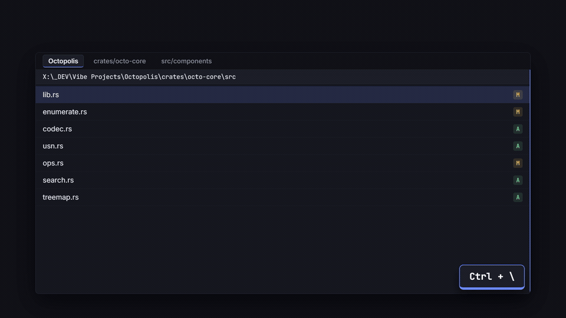
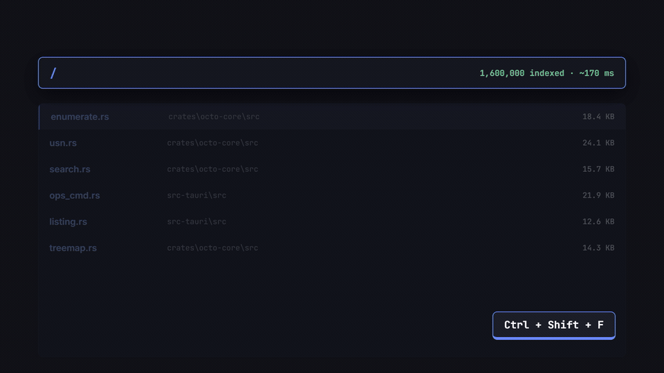
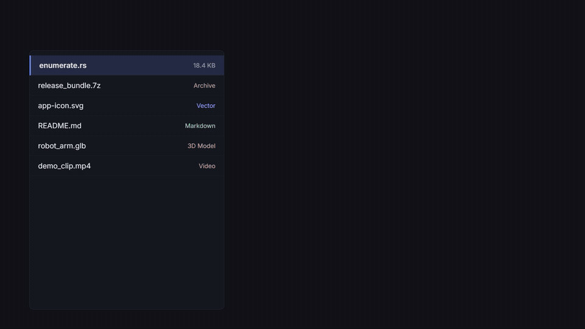
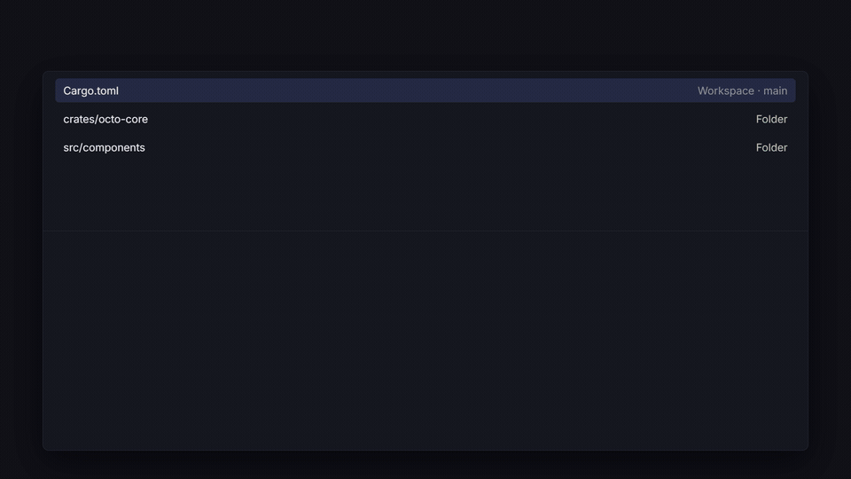

A blazing-fast file explorer built for people who live in their files.
Open 100,000+ item folders without stalling, search entire folder trees with filters, preview code, media, 3D models, and archives inline, and drive everything from the keyboard.

Click any segment to jump up, or press Ctrl+L to type paths with ~ and %ENV% variables.
Pinned folders, recent history, and drives with live free-space bars. Collapsible at any time.
Work side by side or stacked with draggable dividers, Git status badges, and drag-and-drop.
Preview syntax-highlighted code, Markdown, images, PDFs, audio, video, 3D models, and hex dumps.
Streams entries directly via FindFirstFileExW so massive folders render at full refresh rate.
Instant folders, even at 100,000+ items.
Octopolis reads folders directly from Windows in Rust and streams batches to a virtualized list—no UI freeze, no waiting on thumbnails to finish before you can scroll.

Folders update by themselves the moment files are added, renamed, or deleted outside the app.
Direct Win32 EnumerationF5
Uses FindFirstFileExW with large-fetch buffering and \\?\ long-path support so deep paths never fail.
Type-to-Find & Quick FilterCtrl+F
Start typing in any folder to jump straight to a file, or press Ctrl+F to narrow the visible list live.
Auto View & Bento GalleryCtrl+Shift+9
Folders of photos open in a dense Bento gallery; code repositories stay in Details. Override per folder anytime.
Tabs, split panes, and real Windows drag-and-drop.
Organize across as many panes and tabs as you need—and drag files seamlessly between Octopolis, Windows Explorer, browser upload boxes, and chat apps.

Collect files from many folders onto the Shelf, then copy or move them all in one shot.
Split Right or Split DownCtrl+\
Jump between panes with Tab or F6, drag dividers to resize, and save layouts as workspace presets.
Drag Out & Web Drop
Drag files out to any Windows target, or drag images, PDFs, and links from a web browser straight into a folder.
Safe Background TransfersCtrl+Z
Queued copies and moves support pause/resume, speed limits, BLAKE3 checksum verification, and undo/redo.
Find anything across whole folder trees.
Fuzzy matching ranked by relevance, combined with structured filters and a Flat View that flattens every subfolder into one sortable table.

Combine ext:pdf,docx, size:>100mb, dm:week, type:dir, and re: regex.
Subfolder SearchCtrl+Shift+F
Searches indexed drives (parallel walk + NTFS USN journal when elevated) with nucleo fuzzy ranking.
Flat ViewCtrl+Shift+E
Lists every file across all nested subfolders in one sortable view—ideal for finding the largest or newest file fast.
Content Search
Filter inside files with content:"..." alongside path, extension, date, and size constraints.
Inline Inspector and virtual archive folders.
Press Space or Ctrl+I to inspect files without launching external apps—or double-click .zip, .7z, and .tar archives to browse them like normal folders.

Supports tree-sitter code highlighting, Markdown, SVG, PDF, audio waveforms, video, OBJ/STL 3D, and hex dumps.
Virtual Archive Browsing
Open zip, 7z, and tar files inline, preview files inside them, and copy items straight out.
Real Windows Shell Icons
Renders crisp native Windows file icons and thumbnails, plus custom emoji or Windows system folder icons.
Git Badges & Last Commit
Shows branch name, modified/added badges on files and folders, and an optional last-commit column inside repos.
Command palette and a terminal that follows you.
Jump to any folder, run any command, calculate expressions, or open a synced ConPTY terminal that tracks your active directory in both directions.

Navigating in Octopolis updates the terminal's working directory; typing cd in the terminal moves the file list.
Multi-Mode PaletteCtrl+P
> commands · / subfolder search · @ open tabs · # pinned folders · ! shell command · ; guide · math like 5 mb in kb.
Optional Vim Keys
Navigate with h j k l, gg, G, yy, dd, p, v visual selection, and / filter.
Rebindable Shortcuts & ChordsCtrl+K Ctrl+S
Customize every shortcut—including two-step chords—right inside Settings.
Everything else you reach for, built in.
No third-party utilities needed for everyday disk management, renaming, or customization.
Numbering, dates, photo/music tags, regex find & replace, editable name list, and live conflict detection.
Compute folder sizes (Ctrl+Shift+S) with proportional bars and an interactive sunburst/treemap view.
"What is locking this?" shows which Windows process holds an open handle on a file, with one-click termination.
20 ready-made cmd/PowerShell presets plus custom scripts with {list}, {pslist}, and prompt placeholders.
12+ built-in themes (including Midnight and OLED Black), custom accents, adjustable density, and a live theme editor.
Context-aware offline documentation synced to your app theme, plus SHA-256-verified background updates.
Built to keep your hands on the keyboard.
Filter common shortcuts below, or press Ctrl+K Ctrl+S inside Octopolis to rebind any action.